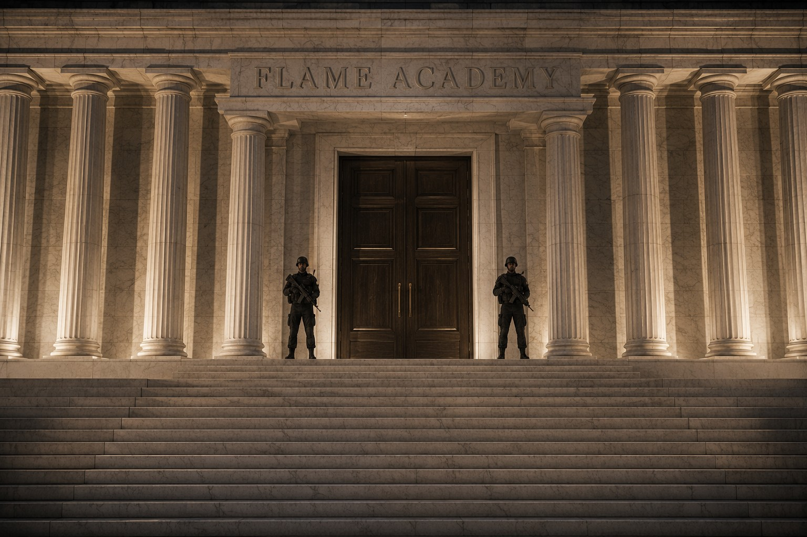
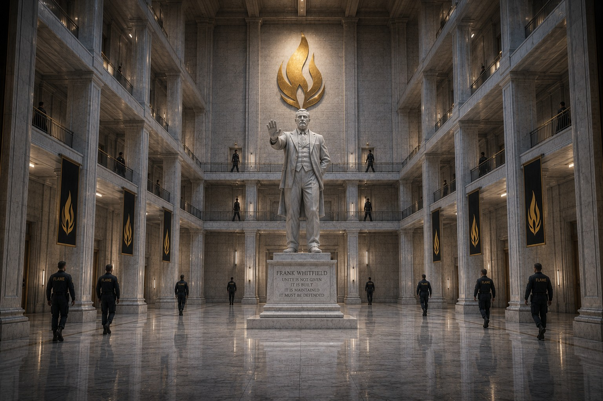
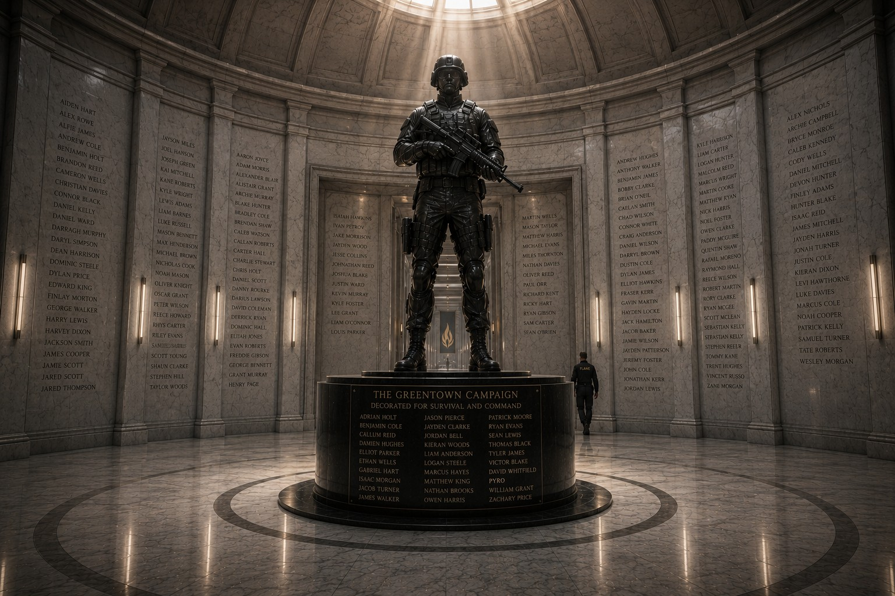
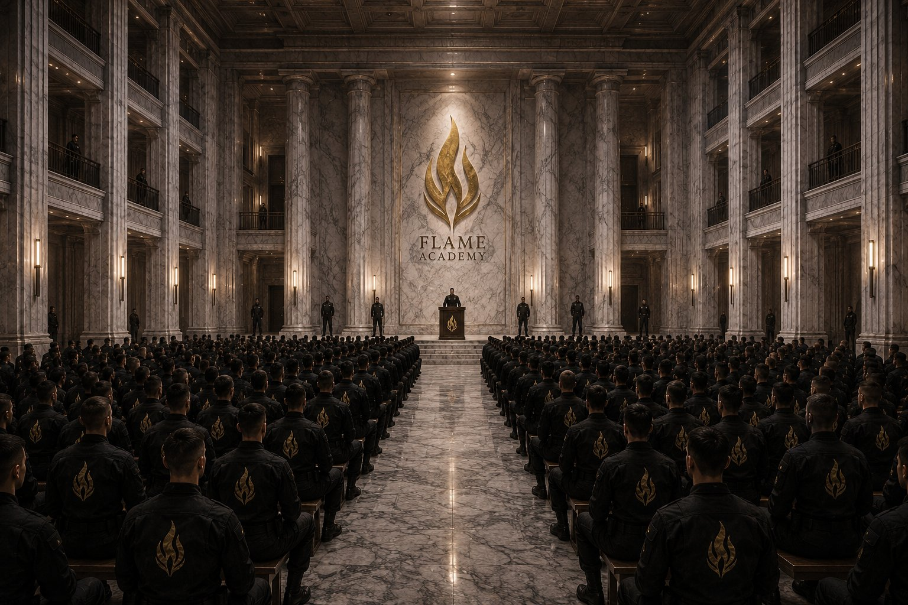
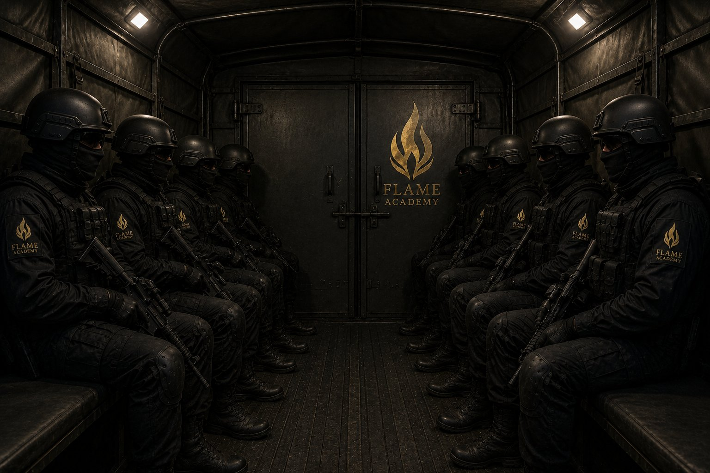
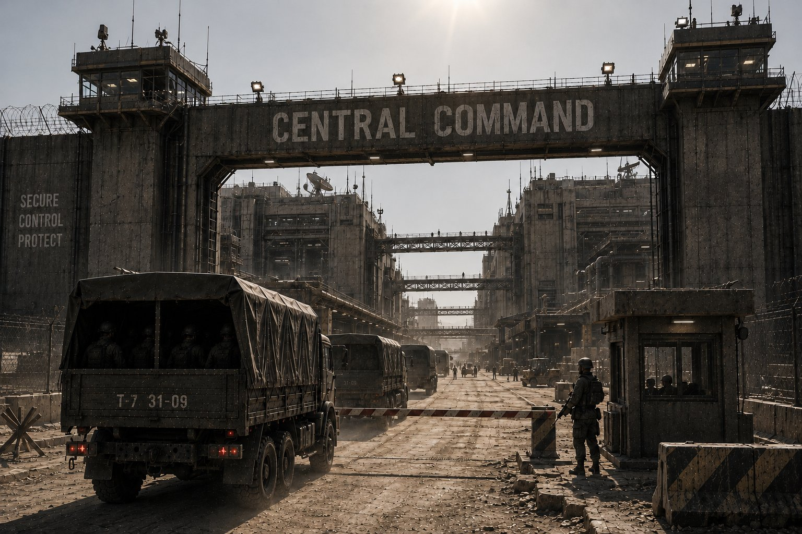
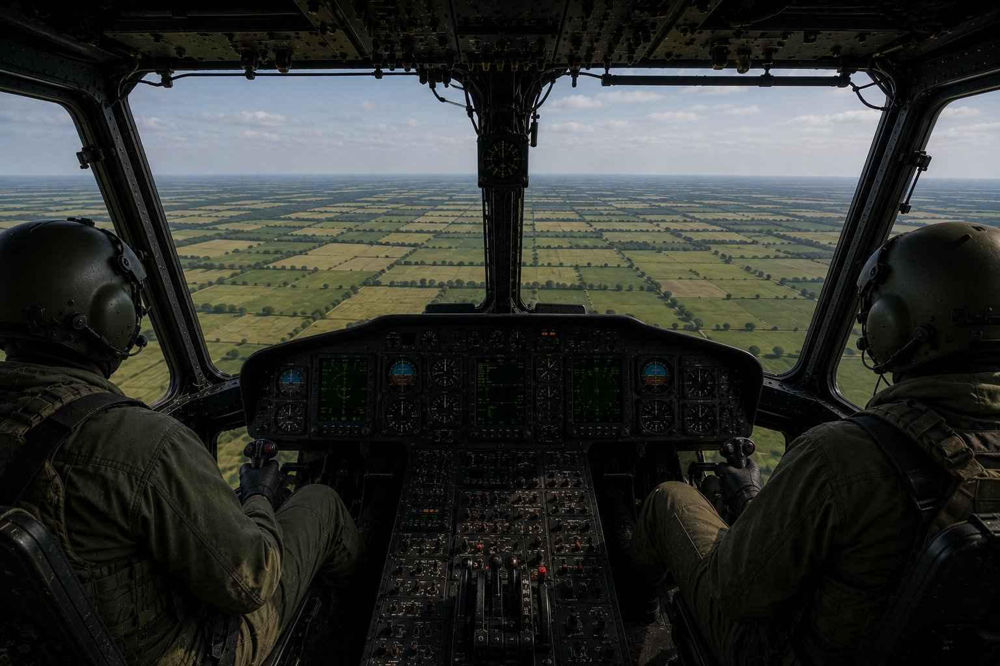
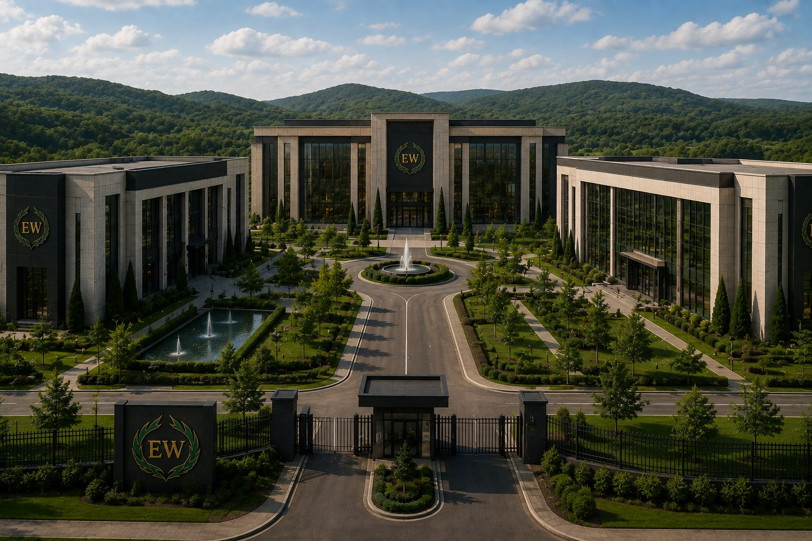

Upon completion of training, all graduating cadets are assembled for final classification and deployment. Cadets showing F Unit potential are identified for assessment. Cadets demonstrating exceptional aptitude in command, combat instruction or specialist disciplines may instead be retained by the Academy for instructor development. All remaining personnel, typically accounting for approximately ninety percent of the graduating class, are assigned to frontline service at the Trench. For most cadets, graduation does not mark the end of their training. It marks their transfer to active duty.

Once final assignments have been issued, Trench-bound cadets are equipped for active service and transferred directly to military transport. The journey south takes two days, with convoys stopping overnight at a designated military camp before continuing towards the defensive line the following morning. For many cadets, the journey is their first opportunity to consider what their assignment actually means. Stories of the Trench circulate throughout the Academy, some speaking of honour, service and the reputation earned by those who hold the line, others of the conditions and realities awaiting those deployed there. A small number of cadets fail to report for onward transport during the overnight halt, abandoning their deployment rather than completing the journey south.

Newly arrived FLAME recruits spend their first week at the main Central Command hub, acclimatising to the heat, conditions and daily routine of the Trench before being cleared for deployment. Recruits remain in their cadet groups throughout this period, with each group placed under the charge of a Trench Mentor, a serving FLAME soldier with years on the defensive line. Their job is simple: teach the new arrivals how the Trench works, what is expected of them and how to survive once Academy training gives way to frontline service. At the end of the week, the groups are broken up and personnel assigned across the defensive line. Some are sent west to Western and Atlantic Command, others east to Eastern and Pacific Command, while the remainder stay within the Central Command sector. From there, they join their assigned units and begin life at the Trench.


Intelligence & Analysis houses Ember West’s dedicated research and analytical division, providing specialist training for cadets selected for intelligence-based roles within the Green Guards. Recruits assigned here are trained in intelligence collection, surveillance, data analysis, threat assessment, communications monitoring and the identification of patterns across large volumes of information. Particular emphasis is placed on the acquisition, verification and assessment of intelligence before its conversion into actionable operational reports for Green Guard command. Those who demonstrate exceptional ability often attract the attention of Cybertech, which recruits directly from Ember West’s highest-performing intelligence cadets.
Administration & Command serves as the operational headquarters of Ember West and the centre of authority for the academy. Natalie Spykes was Ember West’s first director, appointed by Luke Walker when he founded the academy in the aftermath of the Greentown riots. She has held the post ever since on the strength of her record. As director she oversees academy operations, cadet records, personnel assignments and coordination with Green Guard command as each new class approaches graduation. The building houses Ember West’s senior staff and administrative offices. It functions as the principal point of contact between the academy, Green Guard leadership and the wider Greentown government. Matters concerning cadet performance, resource allocation, disciplinary action, deployment readiness and institutional policy are processed through this building before being passed to the relevant command authority.
Ember West was founded by Luke Walker alongside the Green Guard as part of Greentown’s response to the riots, creating a permanent training and security structure capable of supporting the city without relying entirely on outside forces. FLAME’s intervention during the riots left a lasting impression on Greentown. The relationship between the two institutions remained close from the academy’s earliest years onward. Once Ember West had begun producing cadets of exceptional ability, Pyro proposed a route into FLAME for its strongest cadets. Luke Walker brokered the arrangement with Spykes. In exchange, FLAME agreed to put Greentown first if it ever needed help. Cadets whose performance placed them beyond the requirements of conventional Green Guard service can now be transferred to FLAME Academy for further assessment and advanced training. Those accepted are retrained to FLAME standards before being considered for specialist assignments, instructional roles or other positions where their abilities can be put to greater use.
Officer Development forms the primary training arm of Ember West and is where cadets spend the majority of their time during their years at the academy. Cadets receive their preliminary training here in firearms, combat skills, drone operation, military doctrine, leadership and battlefield decision-making, developing the skills required for eventual service within the Green Guards. Further beyond the main campus are the cadet barracks and extensive forest training grounds, where instruction moves from controlled exercises to field operations. Cadets are trained in woodland navigation, concealment, ambush tactics, small-unit manoeuvres and guerrilla warfare, reflecting the unconventional methods that have long formed a central part of Green Guard doctrine. The primary purpose of Ember West is to maintain a steady supply of trained personnel for Greentown’s military, with the majority of graduates entering the Green Guards. The academy operates on a considerably smaller scale than FLAME Academy, reflecting the smaller force it exists to support.
F Unit (FLAME Unit) is FLAME’s elite four-person specialist operations designation. Each unit trains together over an extended period, developing the trust and tactical coordination required to operate as a single entity. Because that cohesion cannot be replaced, the loss of one member results in the unit’s dissolution and the selection of a new four-person team.
The Veterans are FLAME’s longest-serving active F Unit, remaining together for more than thirty years. While successive F Units have been dissolved through operational losses, all four members survived decades of combat deployments, espionage operations and military assignments without replacement. Their service, experience and operational record established the unit as one of the most renowned teams in FLAME history.
The Veterans undertook some of FLAME’s highest-priority operations. They served wherever experience and operational precision were required. Their confirmed service record includes a decisive role in the Greentown riots. They fought alongside the PMC during the Second Hatchet Hills Rebellion. They captured several high-profile leaders responsible for organised unrest throughout the southern provinces. They prevented two assassination attempts against King Wayne Whitfield and members of the Whitfield family. They also successfully disrupted a planned attack against the Citadel. Alongside these operations, the unit carried out numerous espionage missions and military deployments across the continent. They regularly supported Commander David Whitfield whenever the PMC required FLAME assistance.
The Veterans consist of four ageing FLAME operatives. Within FLAME, personnel commonly refer to them as “V Unit” (Veterans Unit), a nickname that reportedly began as a joke among younger recruits who believed the team had grown too old after twenty years of active service. A decade later, following years of successful operations and an unmatched service record, the nickname had become a mark of respect throughout FLAME. Their individual identities remain classified due to the sensitive nature of the unit’s assignments and the continued operational significance of past missions.
The Veterans are widely regarded as one of the most respected teams in FLAME history. Their decades of continuous service and uncompromising professionalism have earned them the admiration of younger recruits. Senior commanders hold the unit in the highest regard. Opposing forces treat them with caution. They are also the only F Unit in FLAME history to have served under three Commanders. Within FLAME, the unit is considered the benchmark against which all future F Units are judged.
Back to FLAME AcademyC Unit, formally designated Chameleon Unit, is FLAME’s intelligence network. Created under Commander Pyro, its name reflects the principle upon which the unit was built. Like a chameleon blending into its surroundings, each operative establishes a life within the environment they are assigned to observe. They gather intelligence without revealing their connection to FLAME. Their effectiveness depends upon their ability to become part of the world around them rather than merely observe it from outside.
C Unit gathers intelligence across different areas of Eurussian society and infrastructure. Each member operates within a different sphere and provides access to a distinct source of information. Mara operates within the streets of Phoenix. Lumos maintains his career within Cybertech. Thorne serves within the Citadel Guard. Hussain works inside the Citadel’s administrative structure. Together, they provide FLAME with intelligence drawn directly from each of these environments.
Separation is fundamental to C Unit. Its operatives work independently and are required to maintain distance from one another while undercover. Communication through messages is permitted when necessary, but face-to-face contact is strictly prohibited. Members must never be seen together. The rule exists to protect both the individual operative and the wider network. If one member is exposed, their connection to FLAME does not automatically reveal the identities or locations of the others. Each operative therefore remains isolated enough to continue functioning even if another member is compromised.
C Unit has no single recruitment route. Its four operatives entered the network through different circumstances, reflecting the unconventional nature of the unit itself. Three were identified by Pyro over a period of years. The fourth approached FLAME independently.
Mara first became known to Pyro while her husband was training at FLAME Academy. She spent considerable time there during those years, allowing Pyro to get to know her personally. Her husband later served at the trench, where he was killed and never returned home. Mara remained within her community, where she became well known and well liked. Her genuinely kind-hearted nature allows her to move through the streets without attracting suspicion. Pyro recognised the value of her patience, discretion and quiet presence. When C Unit required someone capable of operating within the civilian population, he personally selected her.
Pyro first encountered Lumos during a tour of Cybertech’s new facility with Wayne Whitfield. Lumos was still a young engineer at the time and an up-and-coming figure within the organisation. A conversation during the visit was enough for Pyro to recognise his technical ability and strategic mindset. He remained in contact with Lumos afterwards. As Cybertech developed and C Unit took shape, Pyro recruited him into the network. Lumos continued his career within Cybertech and eventually rose to become its Director. His association with C Unit remains unknown to Cybertech. Any activity undertaken on behalf of FLAME is deliberately kept outside official Cybertech records.
Thorne and Flint were close friends during their early years before their careers took them in different directions. Flint chose to progress through FLAME Academy. Thorne instead enlisted with the Citadel Guard. When Pyro identified the need for an operative inside the Citadel Guard, Flint recommended Thorne for the role and reached out to his former friend. Thorne was subsequently recruited into C Unit, providing FLAME with a source of intelligence from inside the Citadel Guard.
Hussain entered C Unit differently from its other operatives. Pyro did not identify or approach him. Hussain came to FLAME himself. Already working within the Citadel’s administrative wing and positioned close to Lionel Brady, he offered access from inside an institution largely beyond FLAME’s direct reach. Following private meetings with Pyro, Hussain was accepted into C Unit and remained in his existing role. The circumstances surrounding his decision to approach FLAME remain classified.
C Unit exists because FLAME’s prominence is both a strength and a limitation. Its personnel can be deployed across the continent, but the organisation cannot maintain a visible presence everywhere it needs information. Chameleon Unit was created to overcome that limitation.
No equivalent formation existed under previous FLAME Commanders. The circumstances of their respective eras had not required one. After taking command, Pyro anticipated that FLAME’s intelligence requirements would change and created C Unit in response. Its operatives became an extension of FLAME’s reach, giving the organisation eyes and ears beyond the practical scope of its conventional operations.
Back to FLAME AcademyF Unit (FLAME Unit) is FLAME’s elite four-person specialist operations designation. Each unit trains together over an extended period, developing the trust and tactical coordination required to operate as a single entity. Because that cohesion cannot be replaced, the loss of one member results in the unit’s dissolution and the selection of a new four-person team.
The current F Unit has remained operational for eight years under the leadership of Cole, alongside Ember, Ash and Smoke. The four were selected during Commander Pyro’s tenure and have since established a strong operational record within FLAME. All members are highly proficient with firearms and close-quarters combat. Their individual areas of expertise provide the unit with additional capability across weapons, technology, demolitions, long-range engagements and bladed combat. Despite persistent criticism surrounding the team, their effectiveness in the field has rarely been questioned.
Cole holds command responsibility within the unit and demonstrates particular proficiency with rifles, light machine guns and heavier battlefield hardware. Ember specialises in technology and demolitions. Ash operates primarily as the unit’s sniper, with long-range precision considered his strongest discipline. Smoke demonstrates exceptional proficiency with knives and other bladed weapons. Ash and Smoke are siblings and were the only two members known to have an established relationship prior to the unit’s formation.
Early training records indicate repeated friction between Cole and Ash. Accounts from the period attribute this largely to competition between the two men, with neither initially willing to concede authority or ability to the other. No significant continuation of this behaviour has been recorded during later service. The two are now known to maintain a close friendship.
Rumours concerning a relationship between Cole and Ember have circulated among FLAME personnel. Neither has confirmed the claims. No formal record exists establishing a relationship between the two operatives.
The current F Unit conducted several early deployments alongside the Veterans. During this period, the older unit provided considerable guidance to the newly formed team and assumed an informal mentoring role. Reports indicate that this arrangement was initially welcomed, with the Veterans contributing directly to the younger unit’s development during its first years of active service.
Relations between the two units have since deteriorated. Members of the current F Unit are understood to believe that they have surpassed the need for continued guidance and have become increasingly unwilling to accept advice from their former mentors. Several run-ins have subsequently been recorded. The disagreement appears to stem primarily from the younger unit’s rejection of a relationship they now consider outdated, rather than any dispute concerning operational capability.
Opinion surrounding the current F Unit remains divided. A number of FLAME Academy graduates and serving personnel consider the team arrogant, with criticism frequently directed towards their confidence and unwillingness to accept guidance from more experienced operatives. Their association with Commander Pyro has contributed further to this reputation. Because Pyro personally selected the four, accusations of favouritism have persisted throughout their service.
These criticisms have had little effect on assessments of the unit’s professional capability. The four remain extremely skilled and have demonstrated a consistently high level of operational effectiveness throughout eight years of service. While their conduct and relationship with senior personnel continue to divide opinion within FLAME, their ability to perform the role for which they were selected remains firmly established.
Liam Nelson, Trevor Brooks, Stephanie Shaw and Jacob Little are the four newest recruits selected for development as FLAME’s next F Unit. Currently nine months into their training, none has yet received a FLAME code name or gained operational field experience. Most of their mission preparation has so far been conducted through virtual simulations, with the four being trained and moulded together as a contingency against the future dissolution of either the current F Unit or the Veterans. Their continued development ensures that a replacement four-person team is already in training should either active unit be lost.
Back to FLAME Academy